Golf GPS · AI caddy · 10 cm LiDAR green maps
The golf app with a real caddy.
Ace knows the hole, the wind, the slope and your real club distances, and tells you what to hit and why. Then ACE brings your golf crew along: live rounds, leaderboards, challenges and the clubhouse.
- Free to start
- Launching early 2027
- 10 cm 3D LiDAR greens
- Built in Rockford, IL
Ace, your AI caddy
Ask what to hit. Get a caddy's answer.
Ace reads the hole, the wind and the elevation, then picks a club from your real distances, not the ones on the box. The more you play, the more it learns: your miss, your tendencies, what you actually carry.
- Club, target and the reason why
- Learns your game from every shot you log
- Ask anything off the course too: practice plans, swing fixes, strategy
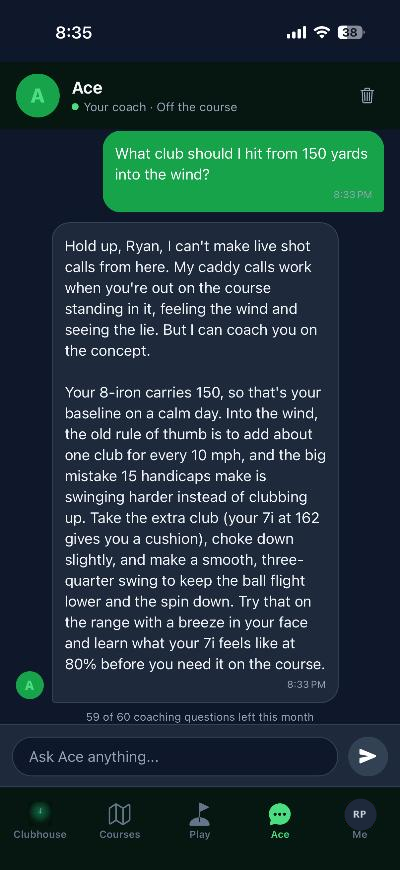
LiDAR 3D green maps
See the break before you putt.
We scan greens with survey-grade drone LiDAR and turn them into 3D maps: the slope, the high side, which way it breaks and how hard. No more guessing what the green is doing.
- 10 cm detail: a height reading every 4 inches across the green. That's 100 times the detail of the 1-meter public elevation data most green maps rely on.
- Live now on all 9 greens at Sinnissippi
- More Rockford courses being scanned
- Break and aim points on the green you're putting on
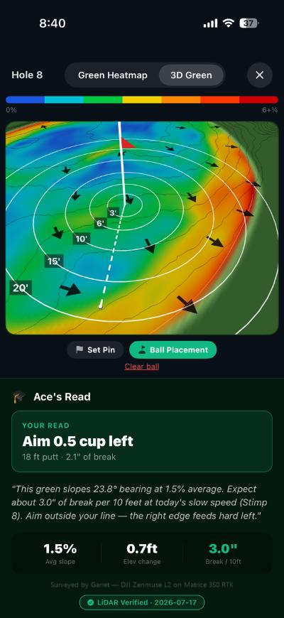
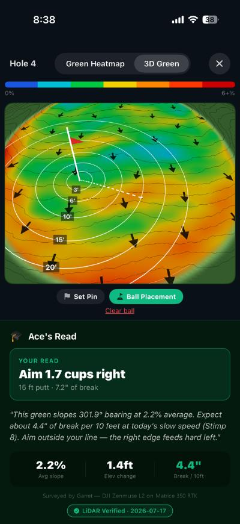
Plays-like GPS
The number that actually matters.
See the whole hole from above with front, middle and back to the green. Tap anywhere to get the distance and the club from your own bag that carries it, then check how wind and slope change what it really plays.
- Front, middle and back on every hole
- Tap-to-target distance with your club for it
- "Plays like" yardage with wind and slope
- Your clubs and real distances along the bottom
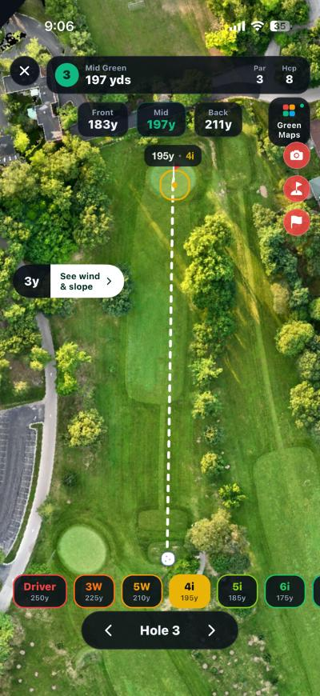
Ace Insights · free for everyone
Every round has a stat worth bragging about.
After every round, Ace digs through your scores and finds the ones TV would put on the bottom-line ticker. Oddly specific, a little ridiculous, and always 100% true.
- Personal bests, streaks and firsts
- "Did you know?" stats from your own history
- Share your round in one tap
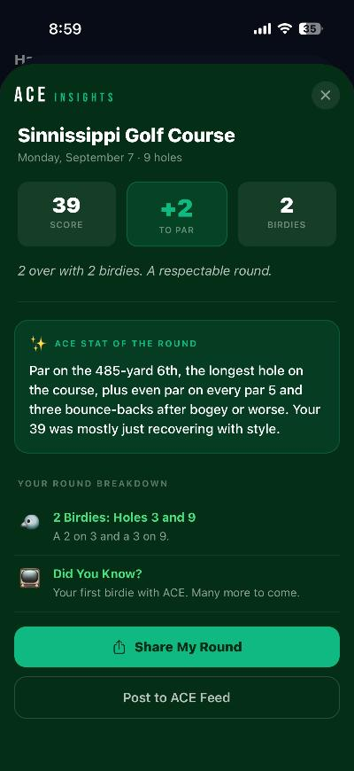
The Clubhouse
Round up your golf crew.
Friends, posts, photos and messages, all in one place. Follow a buddy's round live, hole by hole, with their pace and when they'll be done. Then settle it on the leaderboard.
- Live rounds your friends can follow
- Friends and public leaderboards
- Posts, comments, @tags and messages
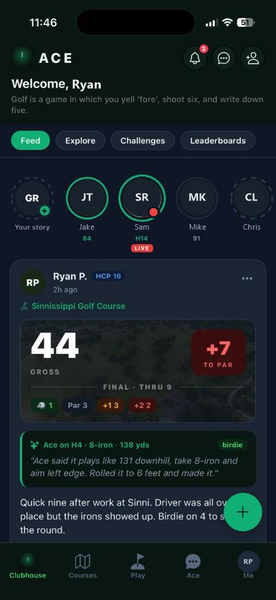
Challenges & tournaments
Challenge your buddies. Or the whole town.
Call out a friend head-to-head, or find golfers near you in Explore, add them, and take them on. Run a tournament over a weekend or a whole season. Nobody has to play at the same time: everyone plays their own rounds, and ACE keeps the standings from the scores you post.
- Challenges: Stroke Play, Head-to-Head, Skins, Nassau, Stableford and Birdie Race
- Tournaments: weekend events or a season-long points race for your league or group
- Live standings: see who's ahead the moment a round is posted
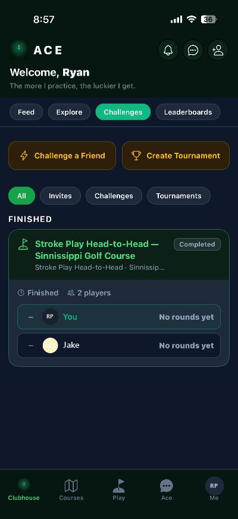
Games on the course
Play a game with your group.
Starting a round with friends? Pick a side game for the group, with the rules right there in the app so nobody argues on the first tee.
- Skins
- Wolf
- Nassau
- Stableford
- Match Play
- Vegas
Bragging rights are the prize. ACE never handles money between players.
Plans
Free to start. Upgrade when you're ready.
ACE Free
$0
- Plays-like GPS distances
- 3 Ace calls per round, 5 off-course questions a month
- Scorecard, handicap and Ace Insights
- The full Clubhouse, challenges and leaderboards
ACE Pro
$9.99/month
or $79.99/year
- Up to 100 Ace calls per round, 30 off-course questions a month
- Full LiDAR 3D green maps and break reads
- Ace learns your real club distances
- Strokes gained, full stats and no ads
ACE Elite
$14.99/month
or $119.99/year
- Everything in Pro
- Up to 150 Ace calls per round, 60 off-course questions a month
- Early access to every new feature
Subscriptions are billed through Apple and renew automatically until canceled. Cancel anytime in your iPhone's Settings.
For golf courses · ACE Staff
Your grounds crew, in every golfer's pocket.
ACE has a staff side built for the people who run the course. The superintendent and grounds crew set today's pins, green speed and conditions from their phone, and every golfer on ACE sees it the moment it's saved. No more chalkboard pin sheets or yardage guesses.
- Pin positions: tap the exact cup spot on each green's map. Golfers' distances to the pin and Ace's putt reads update right away.
- Green speed: set Slow (Stimp 8), Medium (Stimp 9) or Fast (Stimp 11), and Ace adjusts how much break it reads on every putt.
- Course conditions: open or closed, and cart path only, in one switch.
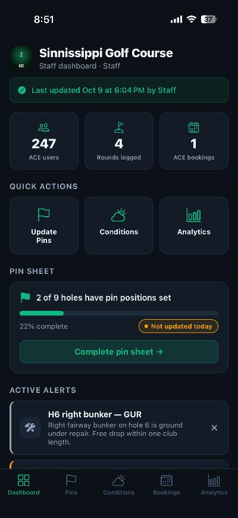
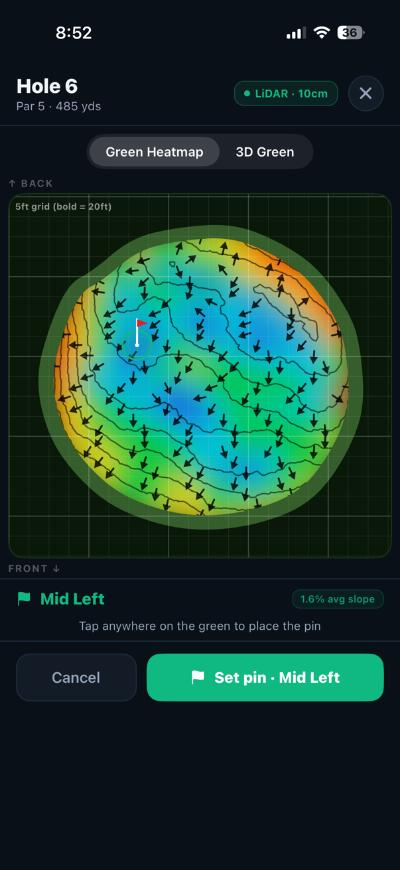
Course analytics
See how your course is really playing.
Every round played on ACE tells you something. Pace of play comes straight from golfers' GPS, so you can see which holes are backing up the course and whether this week is running slower than last.
- Pace of play: average round time and the holes that slow everyone down.
- Pin updates: track which days the pins got updated, so the pin sheet never goes stale.
- Bookings: rounds per day, peak booking times and no-show rates.
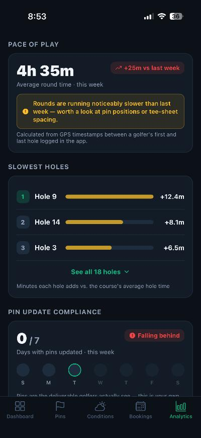
Questions
Is ACE really free?
Yes. GPS distances, scoring, handicap tracking, Ace Insights, the Clubhouse, challenges and a few Ace calls every round are free. Pro and Elite add more Ace, full 3D green maps and deeper stats.
Which courses does ACE work at?
ACE launches in early 2027, and we're building out course coverage across the U.S. for launch. LiDAR 3D greens are already live at Sinnissippi in Rockford, Illinois, with more courses being scanned.
How is Ace different from other golf apps?
Most apps give you a number. Ace gives you a decision: the club, the target and the reason, based on the elevation, the wind and the distances you actually hit, and it keeps learning your game.
Does it work without cell signal?
Your round, scores and shots save on your phone as you play and back up to your account when you're back in signal.
When can I get it?
ACE is launching on the App Store for iPhone in early 2027. Email info@acegolftechnologies.com if you'd like to hear when it's out.
Your caddy. Your crew. Your course.
ACE is launching on the App Store in early 2027. Free to download, free to play.
Coming early 2027 on iPhone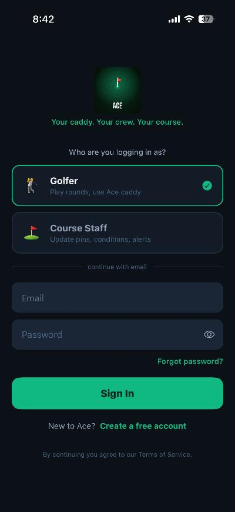